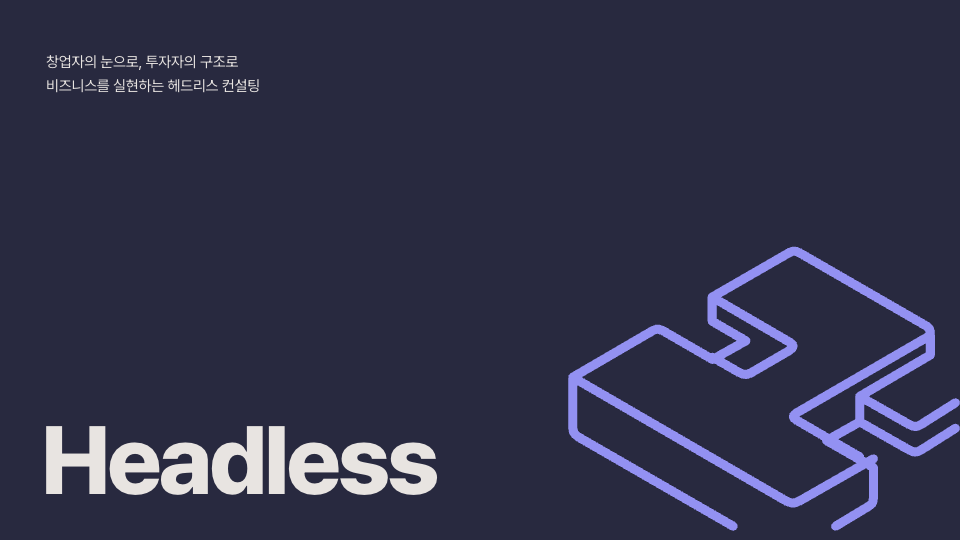
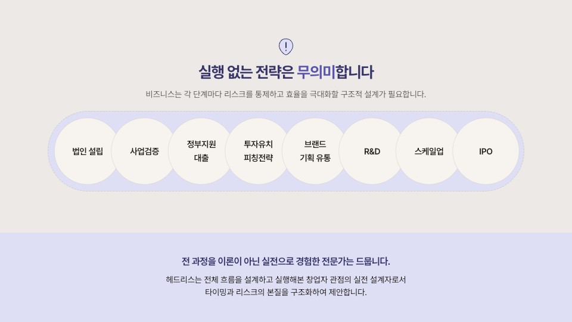
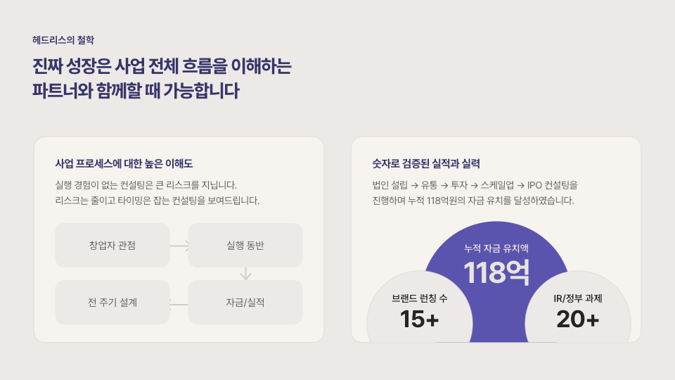
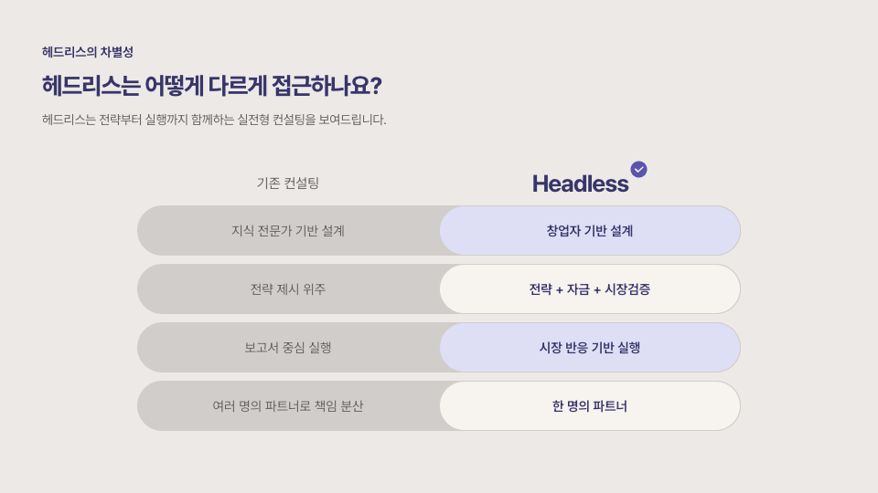
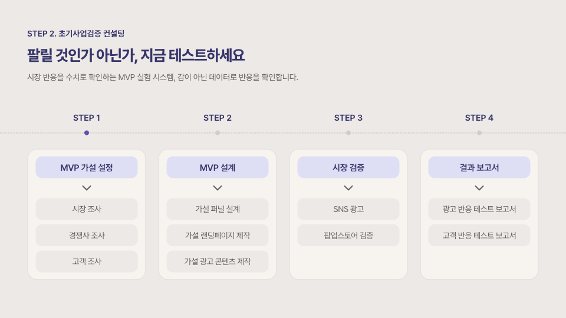
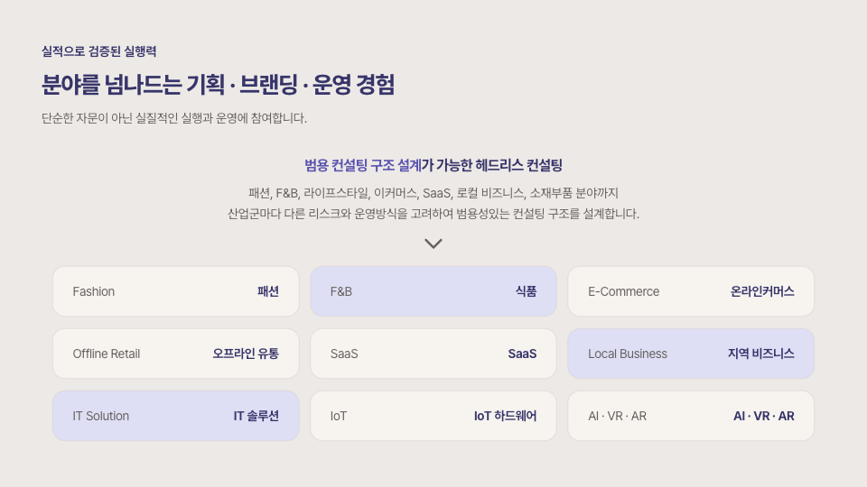

Headless · 표지
좌상단 설명 · 좌하단 대형 워드마크 · 우하단 퍼즐 윤곽 · 좌상단 두 줄 설명과 좌하단 Headless 워드마크, 우하단의 큰 아이소메트릭 퍼즐 윤곽을 유지했다.

실행 없는 전략은 무의미합니다
8개 원형 단계 · 하단 전폭 메시지 · 중앙 제목 아래 8개의 원을 가로로 겹쳐 전 주기를 표시하고, 하단 28%를 메시지 띠로 구성했다.

헤드리스의 철학
상단 2행 제목 · 하단 2카드 · 순환도와 3개 실적 원 · 왼쪽 카드에 2×2 순환도, 오른쪽 카드에 118억을 중심으로 15+·20+의 원을 겹쳤다. 원본 수치를 유지했다.

헤드리스의 차별성
좌측 기존 방식 · 우측 대안의 4행 알약형 비교 · 동일 높이의 가로 알약 4행을 쌓고 오른쪽 절반을 겹쳐 차별점을 표시했다. 상단 Headless 옆 체크를 단일 hero로 두었다.

초기사업검증 컨설팅
수평 점선 타임라인 · 4단계 카드 · STEP 1~4 점선과 4개의 세로 카드를 정렬하고 내부 항목을 3·3·2·2개로 유지했다.

분야를 넘나드는 기획 · 브랜딩 · 운영 경험
상단 설명 · 중앙 소개문 · 하단 3×3 산업 그리드 · 9개 산업을 영문/국문 쌍으로 3×3 배치하고 원본의 F&B·Local Business·IT Solution 세 면을 tint로 구별했다.